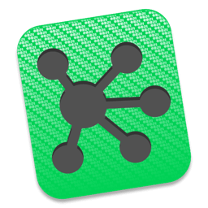
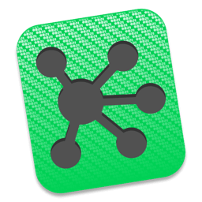

Some Tools I Use
General
My basic toolset that I use most. It's not all about talking. There is so much to learn just by asking the right questions and then use your brain, observe and listen.
 

Low Fidelity
During the ideation process I start sketching. I love to use pen and paper first to be able to test multiple variations in a short amount of time. Then I might use wireframing tools like Balsamic or Omnigraffle. This stage comes with a lot of annonations as well.
High Fidelity
When high fidelity wireframes are needed, like for projects that have significant visual emphasis and mockups matching the production look and feel, I use Photoshop and Illustrator. But since I discovered Sketch, this is my weapon of choice.
Prototyping
I'm doing paper prototyping during each stage of the process. It's fast, it's cheap and it produces results. When it comes to interactive prototyping and testing I like to use tools like Invision, UXpin, Marvel or Flinto.
Analytics
Testing is an important part of the design process to validate or invalidate design decisions. Once a project goes live the testing process continues to guide ongoing optimizations. Some of my favorite tools for this purpose are Google Analytics, Crazy Egg and Optimizely.
Miscellaneous
I have a lot of experience using HTML5, CSS3, JavaScript, Foundation and Bootstrap to create a fully functional prototype, website, page or app when needed. I am very proficient with CMS systems like Wordpress as well.